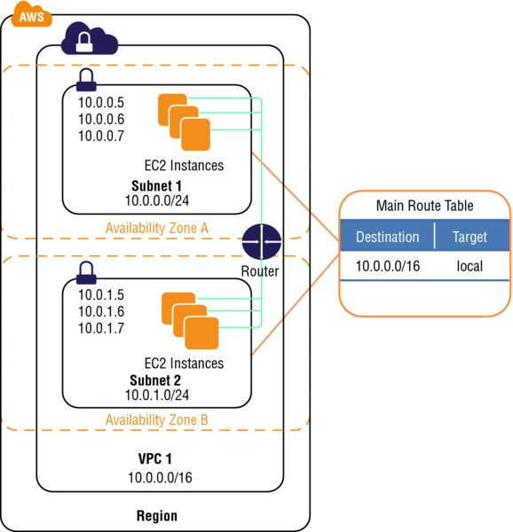
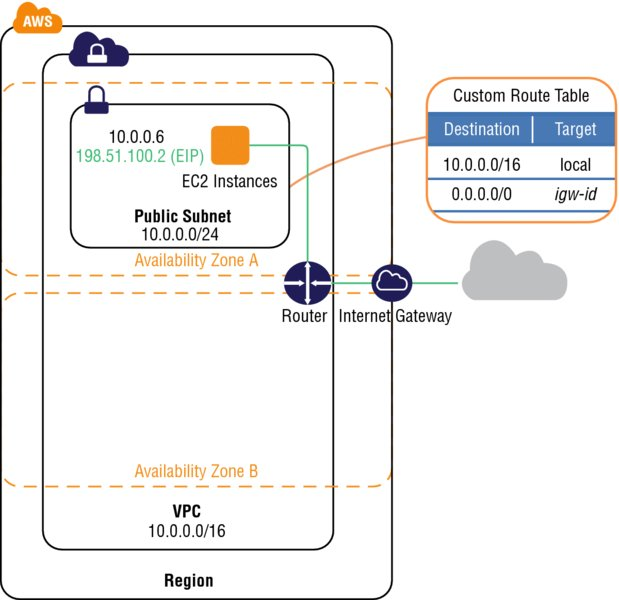

aws-networking
Virtual Private Network (VPC)
Within a region, you can create multiple Amazon VPCs, and each Amazon VPC is logically isolated even if it shares its IP address space.
When you create an Amazon VPC, you must specify the IPv4 address range by choosing a Classless Inter-Domain Routing (CIDR) block, such as 10.0.0.0/16. The address range of the Amazon VPC cannot be changed after the Amazon VPC is created. An Amazon VPC address range may be as large as /16 (65,536 available addresses) or as small as /28 (16 available addresses) and should not overlap any other network with which they are to be connected.
AWS accounts that support EC2-VPC will have a default VPC created in each region with a default subnet created in each Availability Zone. The assigned CIDR block of the VPC will be 172.31.0.0/16.
An Amazon VPC consists of the following components:
- Subnets
- Route tables
- Dynamic Host Configuration Protocol (DHCP) option sets
- Security groups
- Network Access Control Lists (ACLs)
An Amazon VPC has the following optional components:
- Internet Gateways (IGWs)
- Elastic IP (EIP) addresses
- Elastic Network Interfaces (ENIs)
- Endpoints
- Peering
- Network Address Translation (NATs) instances and NAT gateways
- Virtual Private Gateway (VPG), Customer Gateways (CGWs), and Virtual Private Networks (VPNs)
Subnets
CIDR blocks define subnets (for example, 10.0.1.0/24 and 192.168.0.0/24). The smallest subnet that you can create is a /28 (16 IP addresses). AWS reserves the first four IP addresses and the last IP address of every subnet for internal networking purposes.
Subnets reside within one Availability Zone and cannot span zones. You can, however, have multiple subnets in one Availability Zone.

Subnets can be classified as public, private, or VPN-only.
- A public subnet is one in which the associated route table directs the subnet’s traffic to the Amazon VPC’s IGW.
- A private subnet is one in which the associated route table does not direct the subnet’s traffic to the Amazon VPC’s IGW.
- A VPN-only subnet is one in which the associated route table directs the subnet’s traffic to the Amazon VPC’s VPG and does not have a route to the IGW.
Regardless of the type of subnet, the internal IP address range of the subnet is always private (that is, non-routable on the Internet).
Default Amazon VPCs contain one public subnet in every Availability Zone within the region, with a netmask of /20.
Route Tables
A route table is a logical construct within an Amazon VPC that contains a set of rules (called routes) that are applied to the subnet and used to determine where network traffic is directed.
Each route table contains a default route called the local route, which enables communication within the Amazon VPC, and this route cannot be modified or removed. Additional routes can be added to direct traffic to exit the Amazon VPC via the IGW, the VPG, or the NAT instance.
You should remember the following points about route tables:
- Your VPC has an implicit router.
- Your VPC automatically comes with a main route table that you can modify.
- You can create additional custom route tables for your VPC.
- Each subnet must be associated with a route table, which controls the routing for the subnet. If you don’t explicitly associate a subnet with a particular route table, the subnet uses the main route table.
- You can replace the main route table with a custom table that you’ve created so that each new subnet is automatically associated with it.
- Each route in a table specifies a destination CIDR and a target; for example, traffic destined for 172.16.0.0/12 is targeted for the VPG. AWS uses the most specific route that matches the traffic to determine how to route the traffic.
Internet Gateways
An Internet Gateway (IGW) is a horizontally scaled, redundant, and highly available Amazon VPC component that allows communication between instances in your Amazon VPC and the Internet. An IGW provides a target in your Amazon VPC route tables for Internet-routable traffic, and it performs network address translation for instances that have been assigned public IP addresses.
You must do the following to create a public subnet with Internet access:
- Attach an IGW to your Amazon VPC.
- Create a subnet route table rule to send all non-local traffic (0.0.0.0/0) to the IGW.
- Configure your network ACLs and security group rules to allow relevant traffic to flow to and from your instance.
You must do the following to enable an Amazon EC2 instance to send and receive traffic from the Internet:
- Assign a public IP address or EIP address.
- You can scope the route to all destinations not explicitly known to the route table (0.0.0.0/0), or you can scope the route to a narrower range of IP addresses, such as the public IP addresses of your company’s public endpoints outside of AWS or the EIP addresses of other Amazon EC2 instances outside your Amazon VPC.
